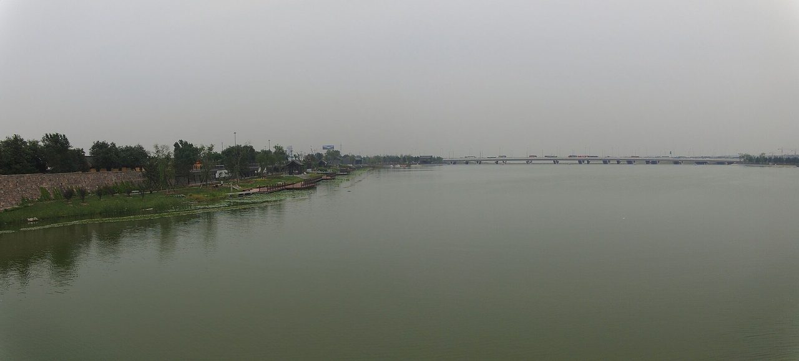
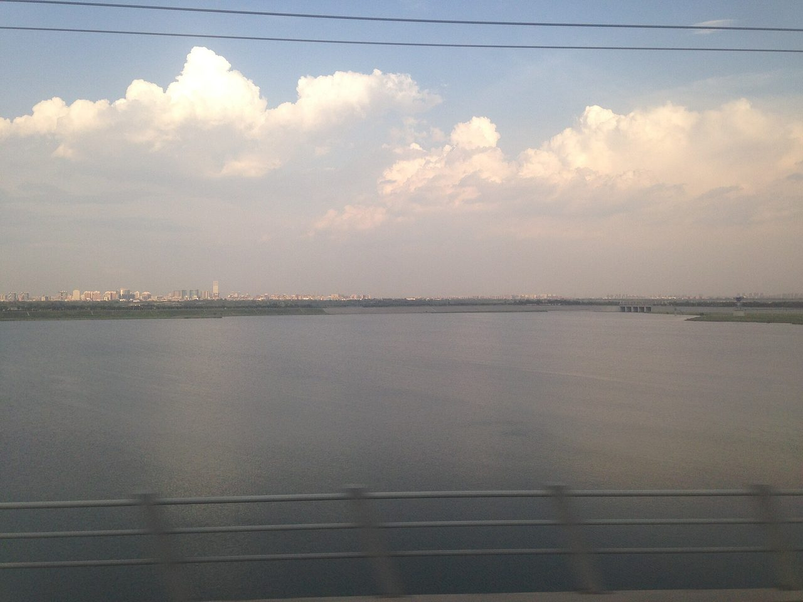
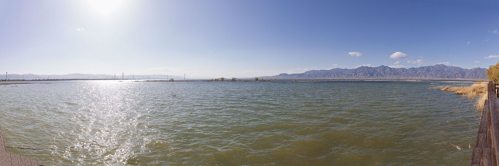

EXHIBIT 01
断流档案
20 世纪 70 年代起，永定河卢沟桥段逐渐断流；此后数十年，河道成为采砂场与垃圾填埋场，也成为京西最大的风沙源。
遥感影像一帧帧按年份排列，可以看见水面消失，又慢慢回来。
看点：把 1970 年代与近年的影像并置，河道的宽度几乎没有变，变的是水。

永定河数字博物馆
Yongding River · Digital Museum
0
断流、采砂、垃圾填埋，然后是再生水、生态补水、湿地修复。一条城市河流如何被重新“养”回来？
Hall 06 · Rebirth
尾厅用一组对比影像和一条水位曲线回答这个问题：从 1970 年代的断流，到 2021 年 9 月的全线通水，中间隔了几十年。
重生不是回到从前，而是重新建立人与河的关系：可以散步的岸线、可以观鸟的湿地、可以被讲述的历史。

Exhibits · 展项
每一组都可以单独停留。展签上的“看点”是本馆给出的观察建议，不是必看清单。
20 世纪 70 年代起，永定河卢沟桥段逐渐断流；此后数十年，河道成为采砂场与垃圾填埋场，也成为京西最大的风沙源。
遥感影像一帧帧按年份排列，可以看见水面消失，又慢慢回来。
看点：把 1970 年代与近年的影像并置，河道的宽度几乎没有变，变的是水。

2010 年 2 月，北京启动永定河绿色生态走廊建设工程。门城湖、莲石湖、晓月湖、宛平湖、园博湖与调水管线、园博湿地相继建成。
治理河长 18.4 公里，恢复水面 400 公顷、绿地 440 公顷。2011 年秋，“卢沟晓月”重现。
水从哪里来？再生水、外调水与流域协同的生态补水，构成了一笔复杂的水账。
2017 年《永定河综合治理与生态修复总体方案》启动后，补水逐步常态化。2021 年 9 月，永定河实现自 1996 年以来首次全线通水。
看点：墙上的“水账”把每一方水的来路都标了出来。

随着水面与湿地恢复，河岸鸟类记录逐年增加。志愿者与水务部门的联合监测，记录下物种数、个体数与停留时间。
鸟的回归，是河流健康最直观的一份报告。
互动：展厅尽头有一台望远镜，对着窗外的真实河面。
Related · 关联影像